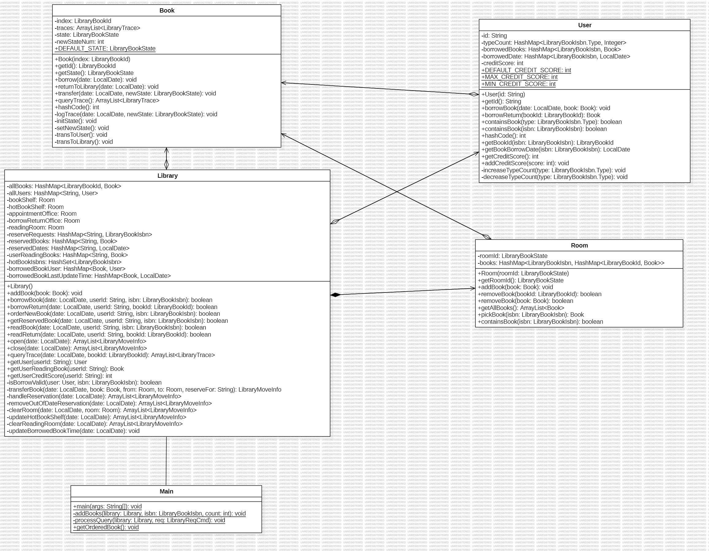
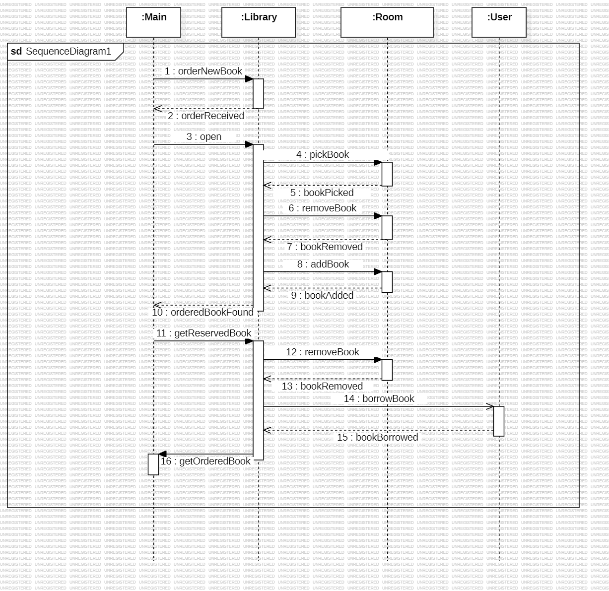

北航2025面向对象设计与构造第四单元&全课程总结
你好！本文章为该博客的第十四篇文章！
本文章包含北航2025面向对象设计与构造第四单元的博客作业内容，期望同学们通过本次博客作业对该单元内容有一定了解。
本文章已经投送至本单元博客作业！
可能你已经发现了，本文章并未在完成后被及时投送至博客中，所以这其实是一个有点失去时效性的填坑投稿……
需要注意的是，本文仅完全适用于北航2025OO课程，对于之前和之后的课程，课程部分内容可能会发生变动，发生冲突时请以当前课程为准！
以及，如果本文章涉及学术诚信问题，请第一时间和我联系，我将及时做出修改，谢谢支持！
北航2025面向对象设计与构造第四单元&全课程总结
前言
较为轻松的一个单元，正适合做一些回顾课程的工作。
仔细想想，一个学期的OO学习，恰如在巨浪中学习游泳一样，危险、富有挑战，但学到的知识也终身难忘。
第四单元作业总结
UML与建模
简而言之，本单元我所采用的是建模与实现交替的方法，在完成UML类图的同时逐步完成实现。
在架构设计之初，我通过对指导书中“图书馆”“用户”“书籍”“书架/xx处”等关键词的识别，得出了UML类图中所展现的各个类型，再通过书籍的转移过程识别出各类型需要管理的属性。
到这一步开始，我就开始着手实现该部分代码，以及一小部分管理属性的方法了，在实现过程中会发现之前设计的不足或混乱之处，此时再对之前的UML类图进行调整。
在完成属性的一部分管理方法之后，就可以通过指导书识别类间交互的方法，并在UML类图中提出了。最后实现之即可。
至于状态图和时序图，由于其在一些复杂方法中体现更为明显，而本单元作业中并不涉及这样的方法，因此其起到的正向建模作用较小。
作业架构简述
本单元采用的架构较为简单，大体上来说是“IO交互-图书馆管理-房间/用户-书籍”的模式。UML类图如下：

该设计的一个显著特点是，其提取了各图书馆内场合中的共性放入 Room 中进行统一管理，在处理请求时将书籍移动简化为了 Room 之间移动书籍的过程（见 Library.transferBook() 方法）和 Room 与 User 交换的过程（见借书取书还书方法）。这与一部分同学“每个房间都单开一个类”的管理方法相比，进行了较大的简化，也使得管理更加统一有效。
然而，该架构未将预约处和阅读室的特别属性提取出来，而是统一放入 Library 中进行管理，这实际上是不太合理的。一个比较合理的修改方法是，仅设计 AppointmentOffice 类和 ReadingRoom 类，应在继承 Room 类之后，将原 Library 里的特殊属性迁移至新设计的类。这样既保证了原架构的简洁，也保证了属性管理的清晰，减少耦合。
另外，对于用户预约书与获得已预约书流程的顺序图如下：

其较为完整的描述了预约与取书的流程，也体现了设计中 Library 作为中心管理类的思想。
大模型与架构设计
在使用大模型辅助正向建模的过程中，直接向其输入一整个指导书中的描述，向其直接求得一份可通过评测的代码，这样的做法往往得不到正确的结果。
一个在之前的单元中我就注意到的现象是，在大体框架已经确定的情况下，大模型往往可以在具体方法的补足上获得极其准确的结果。这样的现象带来的经验指导我完成了先前单元评测机的搭建，但巨量的框架构建仍然带来了不小的压力。
而第八次实验中给出的大模型辅助正向建模的过程，给了我一些启示。在本单元教学内容结束后，我尝试将最后一次作业指导书内作业要求喂给deepseek-r1，文末附注简单的“请设计程序架构，提取出上述场景中的各类，要求具体到类中存在的属性与方法”，其就给出了一个条理十分清晰，但稍显冗余的设计。因此我与其进行多轮对话，尝试简化其设计，并最终得到了一个相对满意的框架。
由此可知，大模型并非无法完成本次作业要求，而是其未得到合适的引导。在“建模-优化建模-实现”的流程下，目前的大模型实际上足以完成单次迭代作业的任务。
在更为复杂的情景下，可能一次性得到整个模型也是不现实的，这个时候也许需要先对整个场景进行一定程度的模块分割，再对模块内部进行建模，而该任务仍然可以交给大模型完成。
全课程总结与心得
无限迭代的设计能力
在本课程开始前，实际上我已经有尝试使用C++写一些相对于程序设计基础课程稍长的程序，甚至其中有一个就是处理离散数学中命题逻辑表达式的程序（其与U1内容非常类似，仅仅是我在表达式树的构建上使用的是后缀表达式构建，而非递归下降）。
然而当时我所设计的架构虽然架构相对清晰可维护，但是其常常会出现过度设计，再加上当时不太会拆类，导致其实现过于冗长。
尽管在本学期的四个单元中该问题始终没有完全解决，导致我和别人比较代码行数之后仍然发出“为什么我的实现比你长这么多”的感叹，但是可以看到的是这个问题在逐步改善。从第一单元的超出别人一半的工作量，到第二第三单元的足够精简，虽然每周一次的迭代开发往往使我来不及思考（或者不得不放弃）一些好的设计，但是也因此限制了实现的复杂度，从而更好的和迭代场景贴紧（也就是避免过渡冗余）。
此外，在之前的架构设计中我很少使用异常处理机制进行增强代码的鲁棒性和健壮性，而U3中的作业练习也使得我对其有了一定的了解。对异常处理的理解和应用将成为我接下来感兴趣的一个技能。
倒逼进步的测试能力
强测和互测的压力带来了对程序正确性的严格要求，这种严格要求又倒逼同学们要么实现一个不错的评测机，要么就不得不费心反复读代码查错。从结果来说，我在U2和U3选择和同学一同编写评测机，而在U1和U4放弃实现了评测机。
显然，每周除了作业之外再去维护评测机是非常辛苦的。但是大多数时候你所要纠结的，并不是如何保证评测机的正确性（这件事情在有了大模型加持之后会比较舒服），而是如何生成一些强而有力的测试数据（这件事用LLM也很难做）。从一开始的随机生成，到后来的针对某些易错场景（如U2的密集询问，U3的反复增删文章）特别设计，总之这门课设计数据的体验和OI中静态查错和快速设计单组数据的感觉非常不一样。
此外的收获？
实际上，从上个学期的OOpre开始，我才开始明确的接触到“使用git进行版本控制”这个想法。本学期中，其不仅帮助我标定了作业中每次提交所做的具体工作（从而理清了其迭代过程和之后要做的优化方向），也帮我在团队合作评测机搭建中做了较好的控制（一个小组四个人的提交是基本不乱的）。与我一同搭建评测机的人也在这个开发过程中逐渐意识到了版本管理的重要性，开始慢慢接纳起了这个工具，我想这个收获应该是不亚于课程本身的教学内容的。
结语
OO的学习如在巨浪中学习游泳一样，危险、富有挑战，但学到的知识也终身难忘。
愿这份设计构造的技能能够伴着每个计算机学院学子，辅助大家在未来的工作中设计出更为严谨坚实的架构。